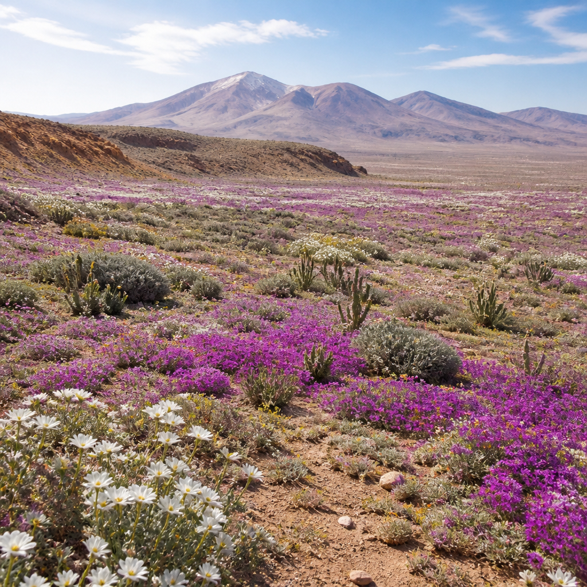
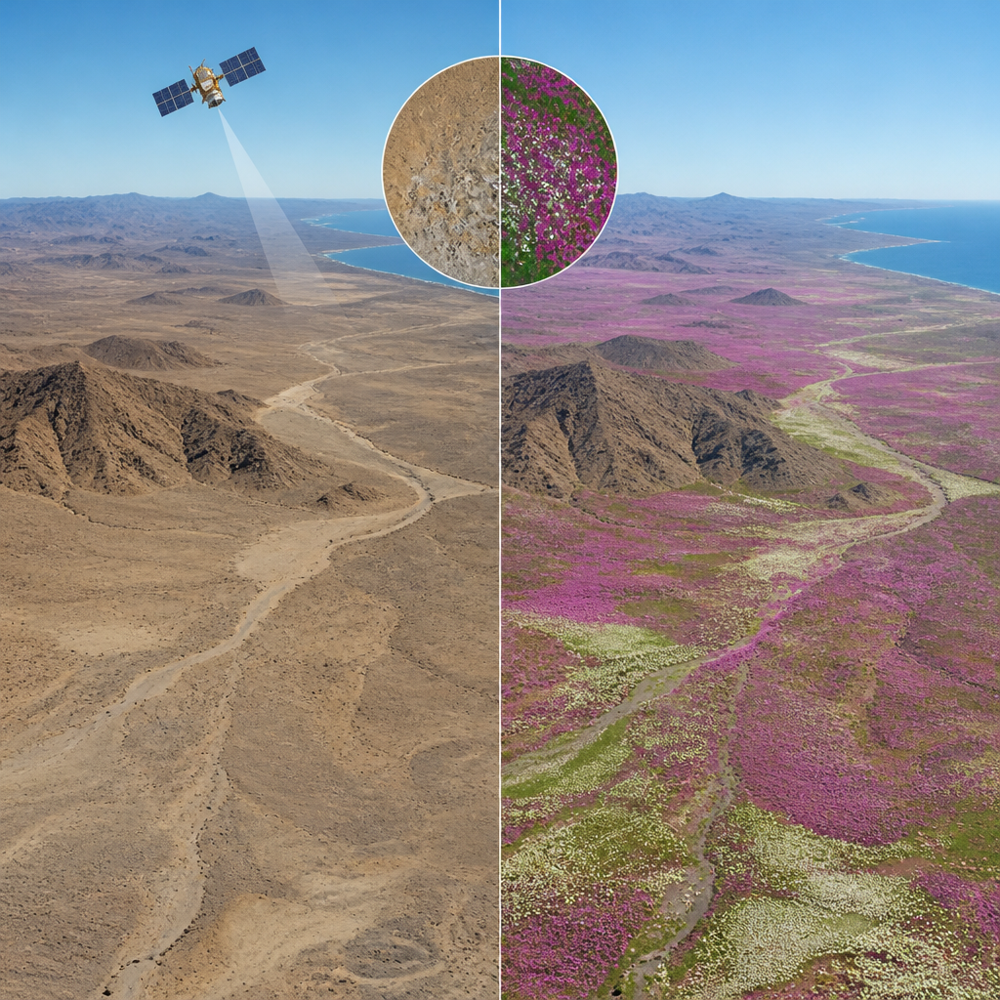
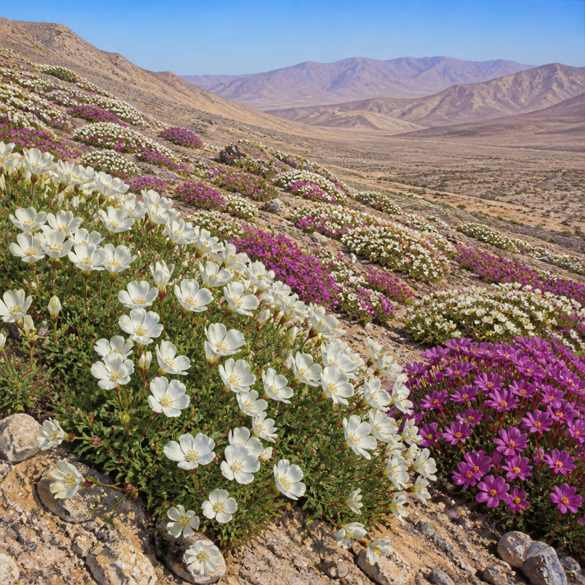

Un inverno insolitamente piovoso ha risvegliato semi dormienti nel nord del Cile, dando vita a un'eccezionale fioritura osservata dai satelliti.
Nella primavera australe del 2026, alcune aree del deserto di Atacama, nel nord del Cile, hanno assunto tonalità viola-rosse, verdi e bianche. In un luogo normalmente fra i più aridi della Terra, un inverno insolitamente umido ha risvegliato i semi rimasti dormienti nel terreno. Il risultato è il desierto florido, cioè il deserto fiorito: un fenomeno che, secondo gli scienziati citati dalla NASA, potrebbe essere stato il più esteso dell'era satellitare nella regione.
Le piogge sono arrivate mentre El Niño si stava rafforzando nel Pacifico tropicale. El Niño è una fase del sistema climatico del Pacifico tropicale che può modificare le condizioni atmosferiche su aree molto vaste. Durante questo fenomeno, l'alta pressione subtropicale del Pacifico, che normalmente contribuisce a mantenere secca la regione, si indebolisce. Allo stesso tempo, un'alta pressione di blocco tende a formarsi nel Pacifico meridionale vicino all'estremità del Sud America.
Insieme, questi cambiamenti hanno spinto verso l'equatore la traiettoria delle perturbazioni dell'emisfero australe. A partire da metà luglio, una successione di fronti di tempesta alimentati da un fiume atmosferico, una fascia di aria che trasporta umidità, ha portato uno degli episodi di pioggia più intensi di luglio degli ultimi decenni su una lunga porzione del Cile, dall'area di Atacama fino a Los Lagos. In agosto, due tempeste invernali ravvicinate hanno inoltre portato neve, un evento raro, su parti del deserto.

Le immagini satellitari del 14 settembre e del 24 ottobre mostrano il deserto in differenti fasi della fioritura. Le osservazioni di settembre sono state raccolte dallo strumento OLI, l'Operational Land Imager, a bordo di Landsat 8; quelle di ottobre provengono dallo stesso tipo di strumento su Landsat 9. OLI è uno strumento che acquisisce immagini della superficie terrestre.
Una delle coppie di immagini riguarda un settore del deserto situato a circa 30 chilometri a sud-ovest di Copiapó, vicino alla parte orientale del Parco nazionale Desierto Florido. Nella scena di ottobre risaltano grandi fioriture viola-rosse di pata de guanaco, probabilmente Cistanthe longiscapa oppure un'altra specie del genere Cistanthe. Ricercatori dell'Università Cattolica di Valparaíso hanno fotografato queste fioriture sul campo nella stessa giornata e le hanno studiate insieme a dati satellitari, droni e fotocamere digitali.
Un'altra zona fiorita, a circa 50 chilometri a sud-ovest di Copiapó, ricade in un'area prioritaria per il suo significato biologico, che comprende anche il paesaggio della fioritura. Qui la Cistanthe era abbondante nella vista di ottobre. L'immagine di settembre, però, rivelava un'altra presenza: aree verdi sormontate dal bianco delle fioriture di suspiros, o Nolana, probabilmente Nolana baccata. I ricercatori hanno fotografato sui versanti del deserto anche queste distese di Nolana.

Il progetto sul campo punta a usare dati satellitari, immagini da drone e fotografie per mappare come cambia la biodiversità della fioritura nello spazio e nel tempo. La biodiversità indica la varietà delle forme di vita presenti in un ambiente. Queste informazioni potranno essere utili a chi pianifica l'uso del territorio e a chi gestisce la conservazione.
I dati raccolti a distanza sono già stati importanti per comprendere le fioriture dell'Atacama. Il telerilevamento, cioè l'osservazione a distanza tramite strumenti e dati, è stato utilizzato in uno studio del 2014 per individuare le zone con fioritura e con piante alimentate dalla nebbia attorno al campo di dune di Copiapó. Un lavoro del 2019, basato su una lunga serie di dati sulla vegetazione della NASA, ha identificato 13 fioriture del deserto di Atacama tra il 1981 e il 2015.
Le piogge invernali del 2026, associate a cambiamenti atmosferici durante il rafforzamento di El Niño, hanno favorito una vasta fioritura nell'Atacama. Le immagini di Landsat hanno seguito l'evoluzione del fenomeno fra settembre e ottobre, distinguendo ampie aree con Cistanthe viola-rossa e Nolana dai fiori bianchi.
Confrontata con le fioriture analizzate in passato, quella del 2026 si distingue per estensione, intensità e durata, almeno nell'epoca in cui è possibile osservarla con il telerilevamento. Nel deserto più secco, le precipitazioni hanno quindi lasciato una traccia visibile non soltanto sul terreno, ma anche nelle osservazioni dallo spazio.
Questo articolo l'hai letto sul blog di Meteo News Radar: un'app che ti mostra da dove vengono i numeri, invece di limitarsi a dartelo. E ogni mattina ne trovi uno nuovo come questo.